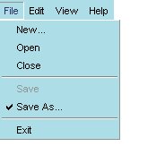
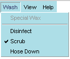

<menuitem />
| Attributes | Common Children |
| value | * * * |
| key | |
| acceltext | |
| accesskey | |
| disabled | |
| oncommand | |
| observes | |
| id | |
| class | |
| checked | |
| type | |
| name |
<menuitem> is the widget that represents the actual item in the menu. menuitems typically appear as children of a menupopup whose own parent is a <menu>. The basic structure of a XUL menu is as follows:
<menu value="File">
<menupopup>
<menuitem value="Open" />
<menuitem value="Close" oncommand="window.close()"/>
<menuseparator/>
<menuitem value="Save" />
<menuitem value="Exit"/>
</menupopup>
</menu>
The value attribute specifies the name displayed for the menuitem.Syntax
<menuitem value="string" />Example
<menuitem value="New" />Notes
<menuitem value="Open" />
When checked is set to "true", the menu itself appears with a check mark next to it in the menubar.Syntax

checked="[true | false]"Example
<menuitem value="AutoSave" checked="true" />Notes
Menuitems can be checked in this way, or they can be created as part of a radio or checkbox menu type (see the type attribute below), in which case the checkmarks appear without having to set this attribute. You can check for the state of this attribute by using something like the following in javascript, where "autosave" is the id of the menuitem:autosave_item = document.getElementById("autosave");
current_state = autosave_item.getAttribute("checked");
if (current_state = true) {
doAutoSave()
}
oncommand is an optional attribute for creating event handlers for key bindings and menu commands.Syntax
<menuitem id="string" value="string" oncommand="event handler code" />Example
<menuitem id="saveKey" value="Save All" oncommand="SaveAll()" />Notes
one..
The typeattribute specifies the kind of menu that contains the given menuitem(s).Syntax
<menuitem type="[ radio | checkbox ]" />Example
<menuitem value="Auto Save" type="radio" name="save_type" />Notes
<menuitem value="Manual Save" type="radio" name="save_type" />
In addition to the default menu type, which has no check marks or other indicators, you can also use the type attribute to specify menuitems of type radio and checkbox. Type, in this case, is a function of the menuitems and not the menu itself.A radio menu allows the user to check only a single menuitem at any time. When an item is selected from the radio menu, that item is checked, and any other item that was checked before is cleared. This functionality requires that all menuitems participating in this group be given the same name.

Note that the first menuitem is not part of the radio set. When the user chooses "Scrub" from the Wash menu, the Disinfect item that was previously selected is deselected. In this scenario, the user can choose only one type of wash at a time.
A checkbox menu type also uses checks to indicate selected items, but it does not prohibit the selection of multiple items. When the example menu above is specified as a checkbox menu, the user can choose to activate a group of items.
Note that names are not necessary for checkbox menuitems, because the toggling of each item functions independently of the others.
name is used to associated radio menuitems with one another.Syntax
name="string"Example
<menuitem value="Auto Save" type="radio" name="save_type" />Notes
<menuitem value="Manual Save" type="radio" name="save_type" />
It is not necessary to use names with checkbox type menus, because the menuitems function independently of one another. Note also that you can name only a portion of the menuitems in a particular menu to make a set; not all menuittems within a particular menu need to be part of the same set.